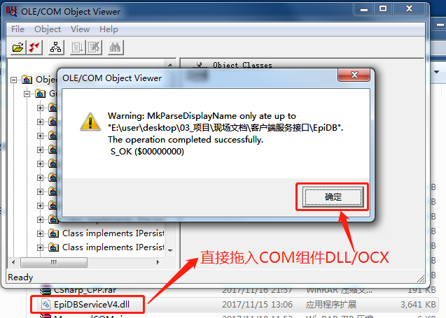
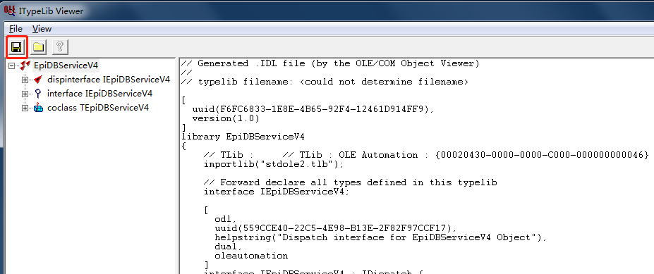
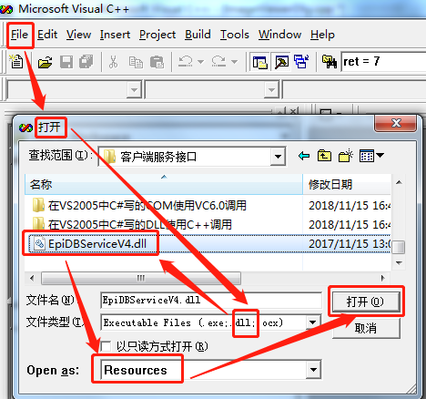
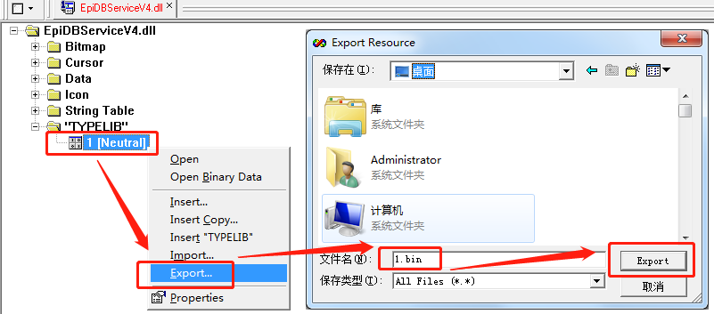
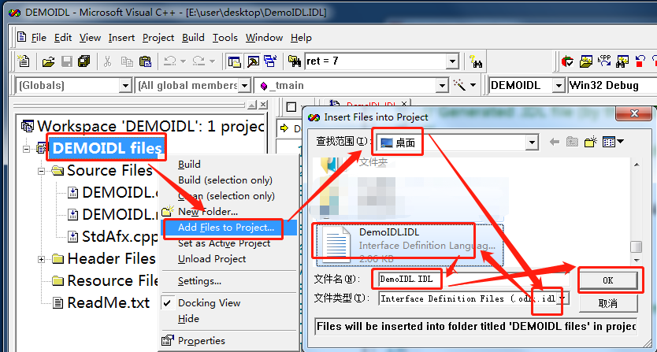
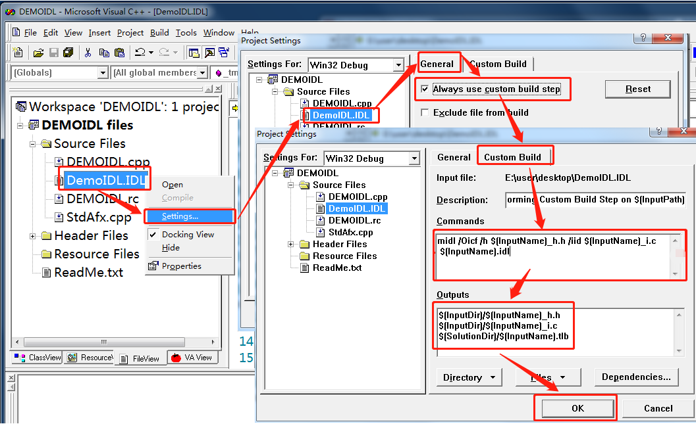
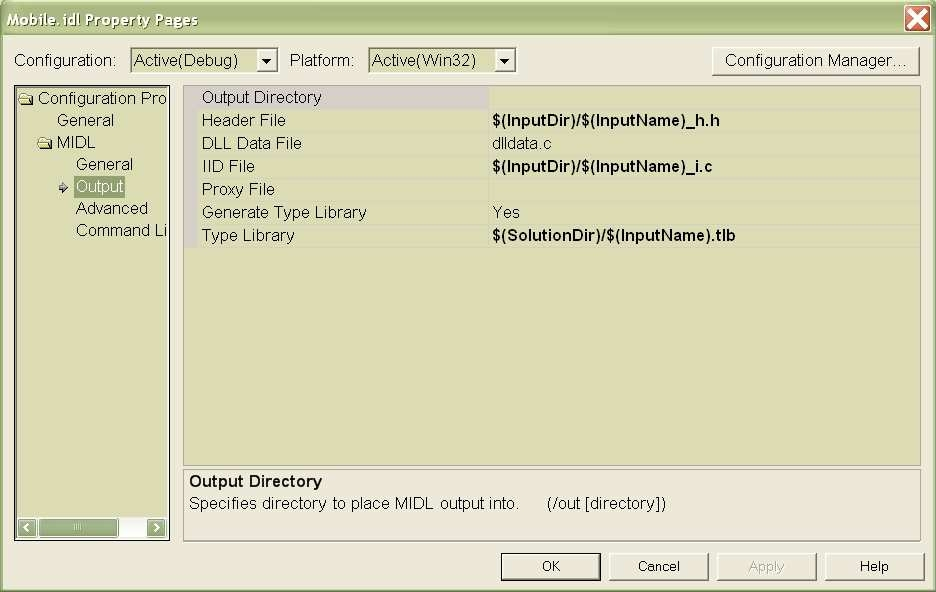

使用MIDL导出COM组件的接口和TLB类型库
- 使用OLE View 产生对应.IDL文件,
- 开始运行oleview调出OLE/COM Object Viewer. 这个工具是微软提供的，在VC6中和Windows
SDK中都有。 找到要用的COM组件，比如说COM组件EpiDBServiceV4.dll，直接拖动到OLEVIEW中，并点击导入成功确认键

- OLEVIEW会打开ITypeLib Viewer，其中自动生成IDL文件，点击File>Save，保存成idl文件。

- 还可以直接使用VC6或者Visual Studio打开dll文件，注意在打开文件对话框中一定要选择Resource方式，VC6默认是auto。找到资源中的TypeLib，其中的文件可以Export成bin，这个bin就是tlb,保存的时候使用将扩展名指定为tlb即可。
使用Visual Studio的Object Viewer可以直接对这个文件进行查看

- 开始运行oleview调出OLE/COM Object Viewer. 这个工具是微软提供的，在VC6中和Windows
SDK中都有。 找到要用的COM组件，比如说COM组件EpiDBServiceV4.dll，直接拖动到OLEVIEW中，并点击导入成功确认键
- 通过MIDL命令产生.IDL文件的.tlb,.h,_i.c文件
- 开始->运行->键入：cmd,调出命令行。
- 直接使用DOS指令调用MIDL.exe来生成tlb文件： MIDL YourName.IDL /tlb
YourName.tlb /h YourName.h /iid YourName_i.c /Oicf
注：MIDL是VS的命令,如果出现文件找不到,是由于您的环境变量配置问题
- 也可以在VC6里面使用MIDL对IDL进行编译： 先把IDL文件添加到项目文件中，

- 然后：Project->Setting,在左边的树列表中选中*.IDL文件，选中General选项卡：在Always
use custom build step前打勾。然后选择Custom build并对其作如下设置： 进入Custom Build标签页.在Command中写编译命令，在OutPuts中写输出位置。
Command中编译命令参考： midl /Oicf /h $(InputName)_h.h /iid $(InputName)_i.c $(InputName).idl
OutPuts中的输出位置参考： $(InputDir)/$(InputName)_h.h $(InputDir)/$(InputName)_i.c $(SolutionDir)/$(InputName).tlb
如果是在VS2003及以上版本的设置如下：
- 然后在VC++的工程中引用可以使用 #import "XXX.tlb" rename_namespace("XXX")进行调用，或直接使用上面生成的.c和.h接口文件